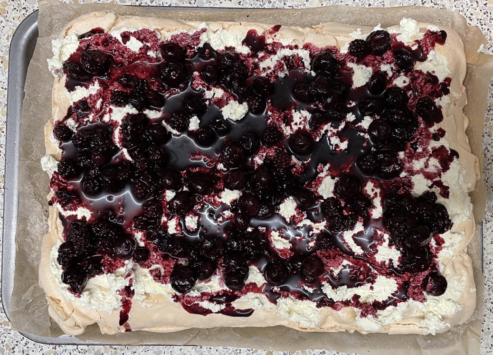
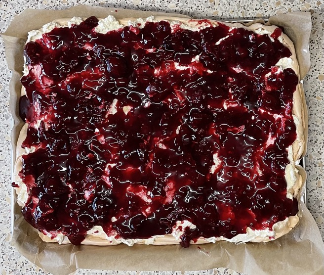

Pavlova - rectangle
Notes
- Make meringue in morning so cooled by time to serve
- Could use 4 or 5 egg whites
Meringue
- Heat oven to 160°C
- Whisk meringue
- Scrape onto a 30x20cm baking tin lined with baking paper
- Level off to even thickness with knife / bench scraper
- Cook at 160°C for 10 mins
- Turn down heat to 140°C and cook for 50 mins
- Turn off heat and leave to cool in oven
Pavlova
- Whisk 300g sweetened cream to soft peaks not butter
- Spread cream evenly over meringue
- Pour or place fruit onto the cream
- Divide with bench scrapper
Topping
- 200g blueberries & 100g blackberries compote
- 60g blueberries & 440g blackberries compote
- Sainsbury's taste the difference cherry compote: some juice drained and rest sweetened with sugar
- Raspberry coulis with 200g fruit
- Opines summer berry compote
- Pear & toffee sauce
- Roasted pineapple & toffee sauce
- Lemon curd
- Strawberries and raspberries
- Lychee and raspberries
- Tinned peaches and raspberries / blackberries
Notes
- Tiramisu
roulade
- Meringue will taste eggy if eat too soon after cooking, meringue taste fine next day
- Make compote fresh each day
- Cooling in oven with door closed gives marshmallow like inside
- 300ml cream is minimum
Made
- Made: Sep 2023 blackberry & blueberry compote, Jun 2023 pineapple toffee, Apr 2023 cherry compote
- 204g whites, 1.1 ratio of egg to sugar: better, not as sweet. 150 10 mins, 140 10mins, 130 40 mins:
meringue cracked probably because crust formed early before meringue had expanded. Try starting heat
lower 140C. Could try lower white:sugar ratio 1:1
Blackberry & blueberry

Cherry
